Главная
Блог
ДисплеиСенсорные HMI дисплеи DWIN
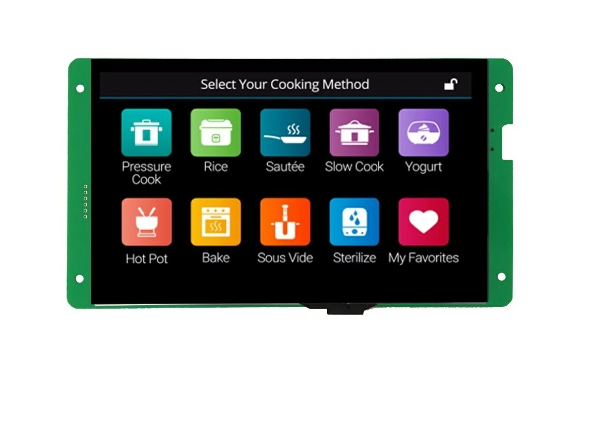
Дисплеи
Назначение дисплеев HMI
HMI - Human-machine interface - человеко-машинный интерфейс, программно-аппаратный комплекс, позволяющий человеку понятным образом общаться с компьютером/контроллером. Своего рода переводчик с человеческого на машинный и наоборот. Дать команду, отправить данные и список дел машине, получить от нее ответ и прочую полезную информацию - прямая обязанность HMI устройств. Самыми простыми представителями интерфейса можно считать кнопку (ввод) и светодиод (вывод). Благодаря даже таким атомарным элементам интерфейса, особенно когда их много, можно создавать вполне себе работоспособные устройства с удобной взаимосвязью с человеком.
Не останавливаясь на достигнутом, со временем инженеры придумывали все более технически сложные, но еще более простые и интуитивно понятные для человека приспособления для общения с компьютером. Светодиоды, группируясь, превращались в сегментные и матричные индикаторы, затем алфавитно-цифровые дисплеи. За кнопками к нам пришли клавиатуры, джойстики, энкодеры и прочие понятные обеим сторонам диалога устройства.
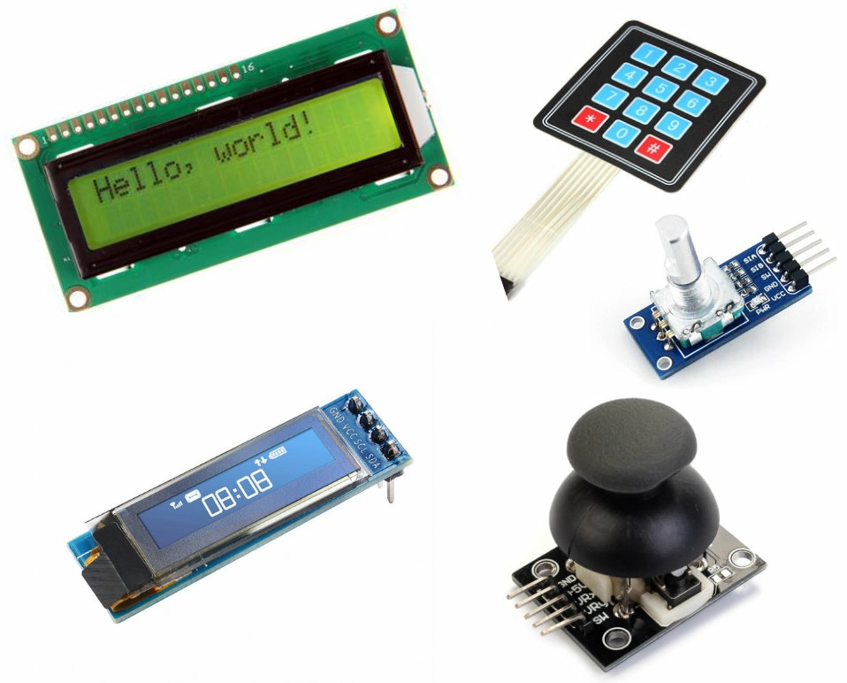
И, наконец, вершиной простоты и понятности стал сенсорный дисплей, наиболее хорошо знакомый нам по смартфонам. Информация выводится на цветной графический монитор в любом удобном разработчику виде и вводится путем нажатий пальцами прямо по нужным местам этого самого монитора. В распоряжении ардуинщиков такое устройство в упрощенном виде появилось достаточно давно.
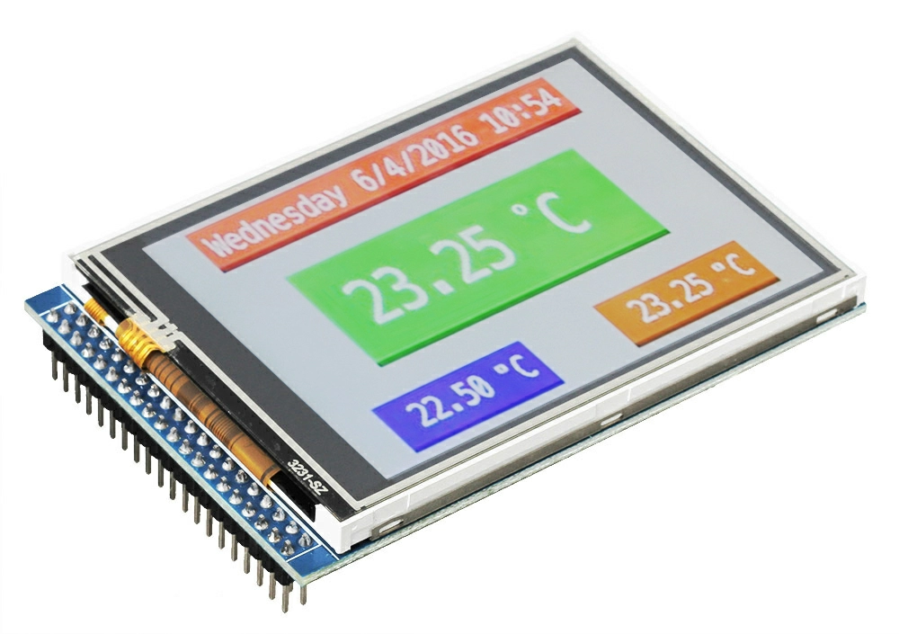
Однако, скорость работы и, особенно, ограниченный размер памяти контроллеров жестоко урезал аппетиты и фантазии программистов, ограничивая интерфейс изображениями простых геометрических фигур и символов из одного простого шрифта. Первые графические дисплеи не пользовались особой популярностью, в отличие от тех же матричных индикаторов 1602, 1604, потребляющих минимум ресурсов при копеечной стоимости. До сих пор огромное количество 3D принтеров работает с этими устаревшими, но заслуженными “дедушками”. Полноценный же “планшет” долгое время для ардуинщиков был заветной, но недоступной мечтой.
Революционным решением стал дисплей NEXTION. Снабженный сенсорами, собственным контроллером, зачастую намного более мощным, чем контроллер главного устройства ардуино-проекта, обладающий большим объемом памяти и возможностью подключить внешнюю флешку, NEXTION наконец-то стал полноценным HMI с графическим интерфейсом без тормозов и почти без ограничений.
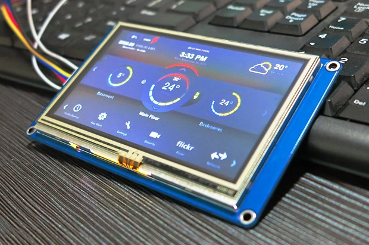
Ограничивается его применение только ценой. Небольшой экран 2,4” сейчас стартует от 3500 руб, серьёзный же семидюймовый планшет далеко переваливает за десятку, что многих останавливает и заставляет вернуться в уютное прошлое. К счастью, как это часто бывает, нашлись добрые люди из Поднебесной, взявшие часть наших проблем на себя. Фирма DWIN наладила производство аналогичных сенсорных дисплеев по ценам в 3-4 раза ниже, за что им от нас горячий лайк и уважение.
На данный момент линейка дисплеев DWIN впечатляет своим разнообразием и продолжает расширяться. Ниже мы кратко перечислим их разновидности, попробуем понять принцип работы и способы связать с нашим контроллером на примере одного небольшого проекта.
Разновидности дисплеев DWIN
Дисплеев DWIN уже выпускается не просто много, а очень много, подробно ознакомиться с полным перечнем можно на сайте компании. Мы лишь кратко перечислим основные параметры и отличия, снабдив их собственными лаконичными комментариями.
Размер и разрешение. Более двух десятков градаций, минимальная диагональ 1,5” при разрешении 240х240, максимальная 21,5” при 1920х1080. Выбор размера зависит от назначения и кошелька. Наиболее востребованы универсальные модели от 5 до 8 дюймов в диагонали, подходящие почти под любую задачу.
Соотношение сторон. От квадратного до широкоформатного. На любой вкус, размер и дизайн устройства.
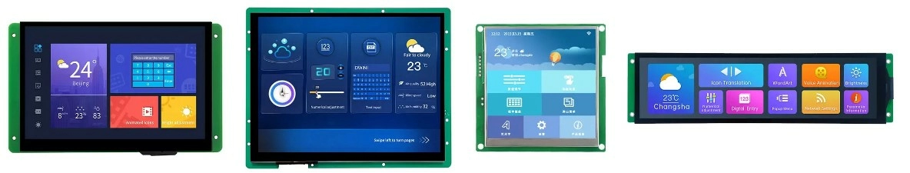
Типы матриц. Их тоже много, самые популярные из которых TN и IPS, знакомые нам по смартфонам и настольным мониторам. Экзотические виды созданы для специальных условий работы, температурах, влажности и прочего экстрима.
Сенсор. Три разновидности, точнее две: емкостной и резистивный, третий вариант - без сенсора вообще, такое тоже может потребоваться, а еще оно дешевле. Для работы в домашних условиях, разумеется, лучше емкостной, он точный, быстрый, чувствительный и позволяет закрывать экран защитной пленкой или стеклом. Резистивный больше подходит для суровых внешних и агрессивных условий, им можно пользоваться не снимая перчаток, он не реагирует на капли воды, понимает мокрые и запыленные пальцы и прочие твердые предметы.
Корпус. Большинство дисплеев выпускается и продается в открытом виде на плате, но можно приобрести в пластиковом и даже металлическом корпусе.
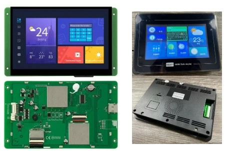
Процессоры. У дисплеев DWIN они собственной разработки, серии T5L, двухъядерные с тактовой частотой до 250 МГц с аппаратным 2D ускорением.
Память. На плате присутствует флеш-память, в которой хранятся графические образы интерфейса, звуки и музыка, а также управляющая ими программа. Объем памяти варьируется от 16 Мб до 2 Гб. Для простых проектов минимального размера хватает с запасом.
Звук. Пищалка, динамик или выход на динамик. Первый вариант позволяет издавать монотонные громкие звуки, например, подтверждая команды или привлекая внимание при некоторых событиях, второй и третий - воспроизводить полноценные записанные заранее звуки, голос, музыку, сигналы и т.д.
Интерфейс. Большинство дисплеев имеет UART и RS-232, из которых при помощи перемычки можно выбрать что-то одно. Существуют версии с RS-485 и CAN. Предусмотрена установка Wi-Fi модуля.
OS. Чаще всего операционной системой является собственная разработка “DGUS OS”, для которой существует одноименная среда интерактивной графической разработки под ПК. Это самый простой и быстрый способ работы с дисплеем. Есть версии Android/Linux, а также возможность программировать процессор напрямую без каких-либо ОС, но это уже явно выходит за пределы наших DIY-проектов.
Класс применения. Их восемь - от “потребительского”, самого простого и недорогого, до класса “суровой среды”, название которого говорит само за себя. Если проект рассчитан на домашние условия эксплуатации, берите самый первый вариант, он дешевле.
Каждый дисплей имеет наклейку с кодом, включающим основные параметры, что позволяет быстро определить что именно попало вам в руки. Например, у нас в распоряжении оказался дисплей с таким наименованием:
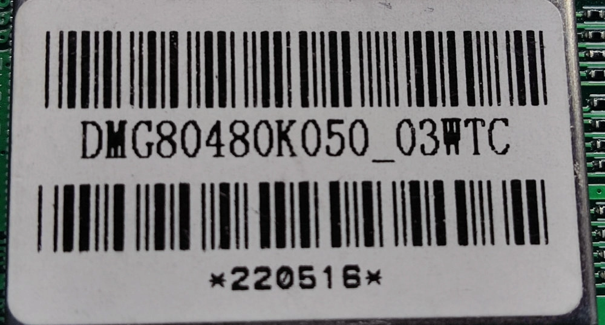
Вооружившись упомянутым выше толкователем, выясняем, что это продукт линейки DM с 16,7М цветов, разрешением 800х480, классом “медицинский”, что бы это ни значило, диагональю 5”, электронной начинкой “03” (?), с расширенным температурным диапазоном и емкостным сенсором.
С ним и будем проводить дальнейшие эксперименты.
Необходимы Arduino модули, датчики ?
Купить Ардуино комплектующие можно в нашем магазине https://3d-diy.ru/catalog/arduino-and-robotics/ с доставкой по всей России
Принцип работы
Полное обучение работы с дисплеями DWIN не является целью этой статьи, в эту задачу мы не впишемся ни по формату, ни по объему. Для этого есть несколько специальных ресурсов, большинство из которых, к сожалению, на китайском языке. Наша задача немного помочь с “быстрым стартом” и избежать простых ошибок новичка. Принцип работы с дисплеем сходу может показаться странным и не очевидным, но разобравшись немного, получим понимание, что на самом деле все достаточно просто и удобно.
Итак, порядок создания интерфейса довольно логичен: подключаем дисплей к Ардуино, используя имеющиеся порты, далее запитываем дисплей подходящим блоком питания (от 6 до 26В 2А+), при помощи специального программного обеспечения на ПК готовим интерфейс, загружаем его в память дисплея при помощи флешки, перезагружаем дисплей, любуемся результатом. Делов-то! Ах да, еще нужно разобраться с протоколом, по которому дисплей будет общаться с вашим контроллером и написать ответную программу. Вот теперь все.
Часть первая: подготовка интерфейса на компьютере.
Скачиваем программное обеспечение “DGUS” вот тут. Вторая строка сверху. Устанавливаем на компьютере и запускаем.
Нас приветствует начальный экран, на котором, помимо традиционных операций с файлами “открыть” и создать”, имеются опции настройки и важные инструменты подготовки интерфейса, без которых никуда. О них чуть позже.
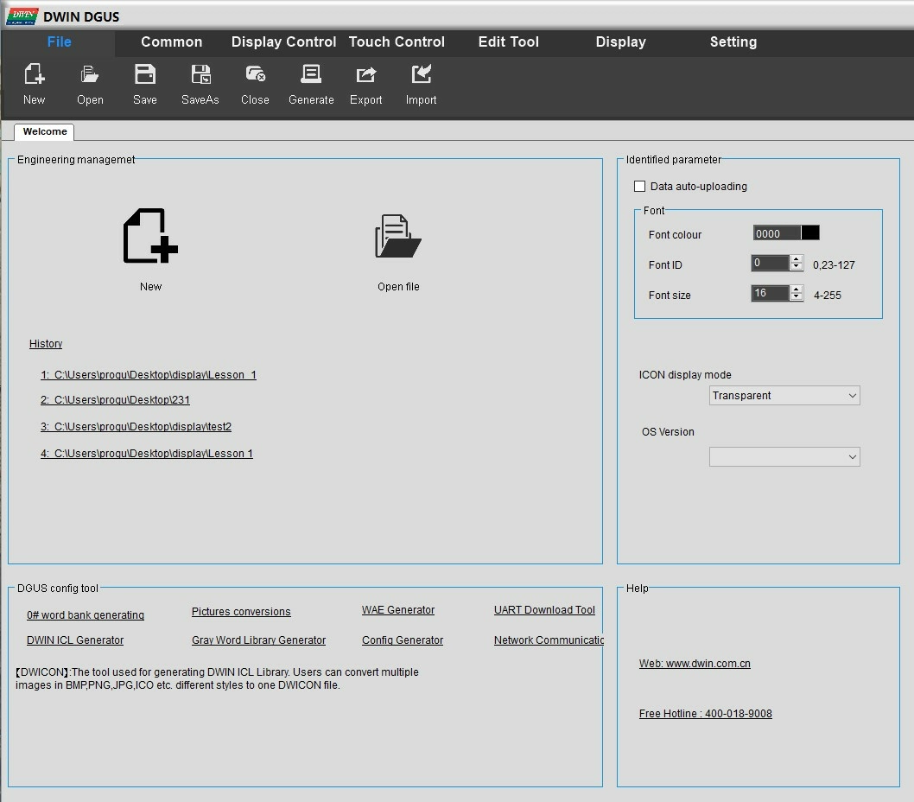
Первым делом заходим в вкладку “Setting”, где выбираем английский язык и разрешение нашего дисплея. К слову, в программе на данный момент переведено на английский не все, некоторые инструменты придется или игнорировать, или изучать при помощи переводчика.
Открываем пример или создаем новый проект и наконец-то попадаем в окно редактора. Что из себя представляет редактор интерфейса? По сути в нем мы оперируем тремя основными слоями. Первый - фон, на нем уже должны быть нарисованы кнопки и прочие элементы управления и взаимодействия. Фон готовим отдельно в любом графическом редакторе, он не меняется во время работы, являясь пассивной подложкой. Второй слой - информационный, для вывода переменных значений, например цифр, надписей, иконок и прочих элементов, которые будут менять свой облик в процессе работы, а нам нужно указать место, где они будут это делать, и привязать к соответствующим переменным. Элементы информационного слоя находятся в вкладке “Display Control”. Слой отображается на поле редактора голубыми прямоугольниками.
Третий слой - сенсорный, рисуем места, чувствительные к прикосновениям, и описываем реакцию на них, что должно происходить в момент, когда там окажется палец оператора. Для элементов сенсорного слоя существует вкладка “Touch Control”. Сенсорный слой виден в редакторе как желтые прямоугольники.
В дальнейшем мы можем менять размер прямоугольников обоих слоев, двигать их по экрану, добавлять новые и удалять ненужные.
Собственно все, на этом графическая часть работы ограничивается. Теперь переходим к самому главному, привязке и описанию элементов активных слоев. Свойства выбранного элемента появляется в правом углу редактора.
В оперативной памяти дисплея RAM располагаются ячейки для переменных. По сути, вся работа дисплея сводится к изменению переменных и/или отображению этих элементов на экране. Например, нажатие на какую-либо кнопку меняет содержимое ячейки памяти, о чем уходит сообщение по каналу связи с главным контроллером. Изменение переменной тут же отображается на экране в соответствующем месте, если это нужно. Изменение переменной может осуществляться двумя способами: изнутри, то есть самим дисплеем при нажатии кнопок, или с течением времени, и извне - командой от контроллера. Важно правильно привязать каждый элемент на экране к своей переменной, затем, в зависимости от типа элемента, описать его свойства и реакцию на события.
Например, так выглядят свойства элемента “Data variables display”, который представляет собой окно, выводящее на экран число.
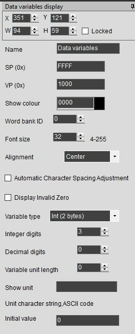
Сверху видим положение и размеры окна, его имя, ниже идет главный для любого элемента параметр - переменная, в виде адреса ячейки памяти “VP” в шестнадцатеричном виде. Теоретически, можно указать любой адрес, но рекомендуется начинать с 0x1000, чтобы не пересечься с данными снизу, которые могут вылезать при больших проектах. Ниже расположен формат изображения, размер шрифта, его цвет и прочее. Еще ниже параметр переменной, по умолчанию это двухбайтовое целое число, но можно сделать его больше, максимальное количество видимых цифр, количество цифр после нуля и так далее.
В качестве другого примера рассмотрим пару для цифрового окна - так называемую инкрементальную кнопку. Нажимая на нее пальцем, мы можем увеличивать или уменьшать число в переменной, в зависимости от настроек.
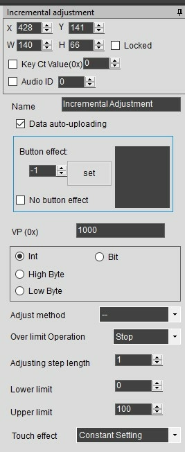
Сверху уже знакомые нам положение и размер кнопки, название. Галочка в “Data auto-uploading” заставляет отправлять данные наружу сразу, когда совершится событие, если она не установлена, данные останутся в памяти дисплея и будут неизвестны внешнему контроллеру, пока он о них не спросит. Далее следует адрес ячейки памяти, с которой совершается действие, если он такой, же, как у окна из предыдущего примера (0x1000), цифра в окне тоже изменится. Кнопка “incremental adjustment” меняет переменную, а окно “data variables display” её отображает. Завершают список описательные параметры, обозначающие, что и как именно делать при нажатии кнопки. В данном примере указано, что переменную следует уменьшить на единицу, а при достижении нижней границы остановиться, указаны эти самые границы - от 0 до 100, менять переменную однократно и при однократном нажатии.
Подобным образом настраиваются все нужные для интерфейса кнопки окна и иконки. Элементов для обоих активных слоев довольно много, с полсотни, у каждого из них свои особенности и назначение, перечислять и описывать их здесь подробно не будем. О части из них можно почитать на сайте производителя и изучать самостоятельно по аналогии.
Создаем файлы с управляющим кодом нажав на кнопку “Generate” во вкладке “File”. Три файла автоматически попадают в папку “DWIN_SET”, они уже готовы для записи в дисплей.
Обратите внимание, названия файлов начинаются с цифр и это не просто так. Цифра в данной системе - это адрес блока флеш-памяти, куда файл будет записан, и для каждого файла предназначен свой конкретный адрес, надо это четко понять и запомнить!
К сожалению, для работы интерфейса этих трех файлов недостаточно. Нужно подготовить еще как минимум файл фона (фонов), шрифта (шрифтов), иконок, если они нужны, и звуков, если они должны быть. Все эти данные требуется сгенерировать в файлы собственного формата DGUS, для чего на вкладке “Welcome” (она же начальная страница редактора) уютно располагаются соответствующие инструменты.
Главные инструменты здесь, без которых никак не обойтись даже в самом маленьком проекте, это генератор фона и иконок “DWIN ICL Generator”, а также генератор шрифта, который называется “0# word bank generating”. Шрифты записываются с нулевого блока.
Первый инструмент преобразует заранее подготовленные картинки в фон (фоны), которые будут занимать блок флеш-памяти 32, а значит название файла следует начинать с цифры 32, расширение файлу присваивается автоматически - “ICL”. Этот же инструмент генерирует иконки, то есть небольшие картинки, которые будут появляться в нужных местах дисплея, перемещаться по нему (ползунок), вращаться (стрелка) и совершать прочие визуальные действия. Файл имеет ту же структуру и расширение, но должен отличаться названием, например “64”, “68” и так далее. В один файл можно записывать до 64000 картинок, однако следует учитывать его размер, чтобы он не перекрыл другие занятые соседние блоки памяти.
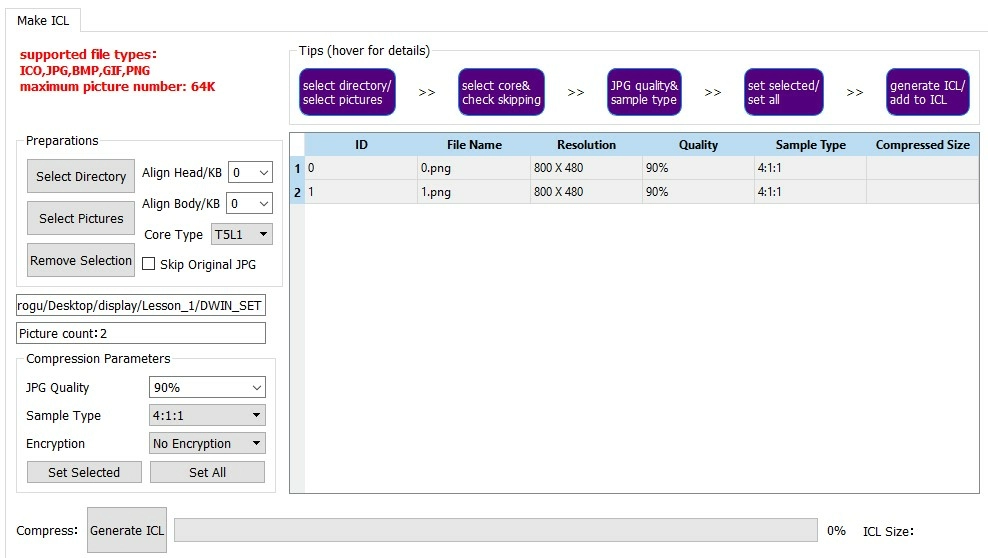
Второй инструмент переводит стандартные шрифты в шрифты собственного формата. Следует выбрать понравившийся шрифт, сплющить его по горизонтали, чтобы буквы не вылазили за рамки и записать в фирменный файл, имеющий расширение “HZK”. Если в проекте имеются информационные элементы с цифрами или буквами, обязательно нужно создать хотя бы один файл с шрифтом, иначе на их месте будет пустое пространство без сообщений об ошибке. Берем на заметку.
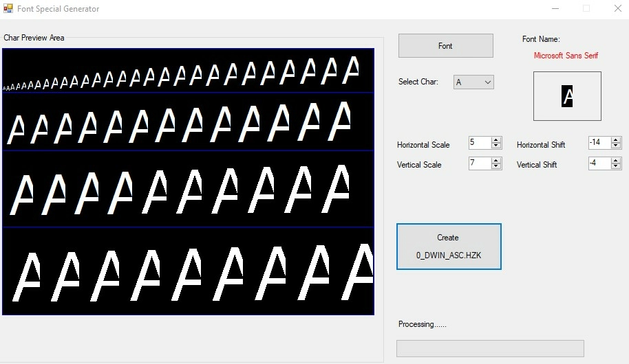
Еще один файл, который можно и не трогать вовсе, создается инструментом “Config Generator”. Как следует из названия, это файл конфигурации.
В нем получится включить звук подтверждения нажатия кнопок, добавить функцию снижения яркости подсветки после некоторого времени неиспользования, подключить байты контрольной суммы в протокол обмена, “повернуть” картинку на экране на 90, 180 или 270 градусов. Остальное лучше не трогать, пусть будет как настроено на заводе.
Файлы автоматически записываются все в ту же папку “DWIN_SET”. В итоге, там соберется вся нужная и не очень информация. Список файлов будет примерно таким:
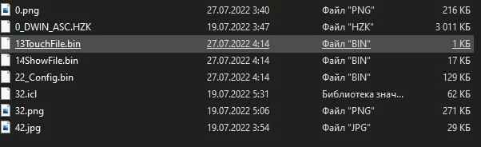
Png, jpg и прочие внесистемные файлы-исходники, из которых мы сгенерировали ICL, тоже автоматически копируются в эту папку, наверное для справки и архива, в дисплей они не заливаются и уже ни на что не влияют.
Запчасти и комплектующие для 3D принтераможно купить у нас https://3d-diy.ru/catalog/spare-parts-3d-printer/ с доставкой до двери по всей России.
Прошивка дисплея
Самое “сложное“ звено цепи. Переписываем папку “DWIN_SET” в корень SD-карты, вставляем в выключенный дисплей, включаем дисплей, ждем пока прошьются файлы, на экране должна появиться примерно такая таблица, обязательно заканчивающаяся на “Flash CRC32 Check”:
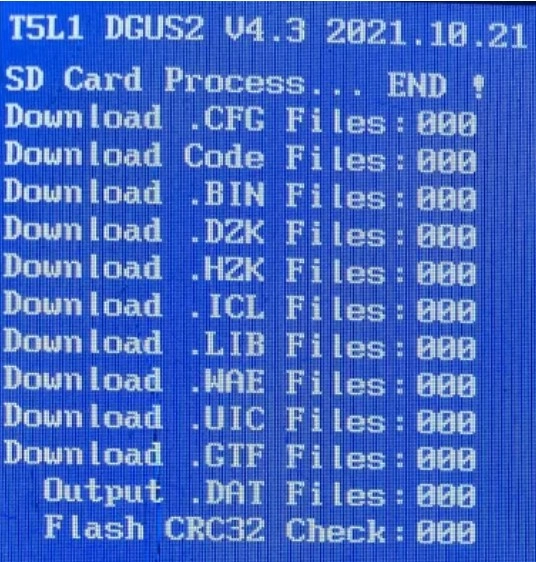
Обесточиваем дисплей, вынимаем флешку и через секунду снова включаем дисплей в рабочем режиме. Все.
Важное примечание: если нужно произвести изменения не глобального характера, например изменить дизайн фона с сохранением расположения элементов, поправить настройки элементов, поменять адреса переменных и так далее, прошивать снова весь массив файлов не нужно, достаточно переписать только те файлы, которые претерпели изменения. Так мы сэкономим ресурс памяти и немного времени на прошивку.
Протокол обмена данными
Первым делом подключаем дисплей к контроллеру проводами. Дисплеи DWIN общаются с внешним миром через serial-порт, аппаратно это может быть исполнено в нескольких вариантах: UART-TTL, RS-232, RS-485. Самый простой из них UART-TTL, который может подключаться напрямую к контроллеру с пятивольтовой логикой. Если контроллер работает на 3.3 В, обязательно воспользуйтесь преобразователем уровней. Остальные варианты потребуют адаптеров и переходников, например, наш дисплей, имеющий только RS-232 на борту, пришлось подключать к контроллеру через вот такой немаленький адаптер-франкенштейн:
Разумеется, для стационарного, готового к долгой работе устройства, можно собрать переходник проще и компактнее, на микросхеме MAX3232, но мы пока стараемся оставить дисплей в первозданном виде, не лишая его родных разъемов. Отсюда совет: лучше обойтись без лишних трудностей и выбирать дисплей с UART-TTL на борту.
По умолчанию установлена скорость UART 115200 бод, ее можно изменить в файле конфигурации, но лучше оставить как есть. Обратите внимание, что такую скорость стабильно поддерживают не все программные serial, оптимально подключать дисплей к аппаратному порту.
Теперь коротко о самом протоколе. Дисплей либо сам выдает пакет данных, при каком-либо событии, либо отвечает на запрос от контроллера. При этом на выходе формируется схожая последовательность данных. При автоматической передаче данных пакет выглядит в шестнадцатиричном исчислении примерно так:
5A A5 06 83 10 01 01 00 14, где:
5A A5 - заголовок пакета, по нему следует определять, что пришли данные, а если дисплеев несколько, то и от какого именно, для чего заголовок можно немного докорректировать,
06 - количество последующих байт с информацией после этого байта, то есть начиная с байта команды,
83 - байт команды, теоретически их несколько, практически всего два: 83 - передача данных от дисплея и 82 - отправка данных на дисплей.
10 01 - адрес ячейки памяти, с которой начинается передача данных (0x1001),
01 - количество передаваемых слов (слово это int - два байта),
00 14 - само слово c с данными (0х0014).
Например, если вы касаетесь кнопки на экране, которая нужна для того, чтобы увеличить некоторое число, пусть яркость, сообщение об этом событии будет моментально отправлено на контроллер. Вы знаете, что адрес переменной с параметром “яркость” 0x1001, а значит число 0x0014 есть новое установленное на дисплее значение яркости. Все довольно просто.
Да, важно помнить, что для автоматической отправки сообщений на контроллер у элемента в свойствах должна быть поставлена галочка “Data auto-uploading”, иначе переменная будет изменяться в памяти дисплея, но контроллер сможет узнать об этом только по запросу.
Сделать запрос тоже несложно, надо отправить с контроллера на дисплей примерно такое, похожее на предыдущее, сообщение:
5A A5 04 83 10 01 01, где тот же заголовок, количество байт в пакете включая команду, адрес (0x1001) и количество считываемых слов, в нашем случае, одно. В ответ придет точно такое же сообщение, какое было бы отправлено автоматически, рассмотренное нами выше.
Преимущество запроса перед автоматической отправкой в том, что считывать можно сразу несколько ячеек памяти, достаточно задать требуемое число в конце пакета, например, вместо 01 поставим 03 и получим в ответ содержимое трех ячеек памяти, начиная с указанного адреса: 0x1001, 0x1002, 0x1003. Зачастую это очень удобно.
Наконец, мы можем напрямую записать нужные нам данные в нужные нам ячейки памяти дисплея. Для этого отправляем на него такой пакет:
5A A5 05 82 10 01 12 34, где все те же знакомые байты кроме байта команды, теперь он 82. С помощью данного пакета мы записываем в ячейку 0x1001 слово 0x1234 (два байта, помним, да?).
В ответ придет сообщение от дисплея, из которого мы поймем, что данные получены и записаны в память успешно: 5A A5 3 82 4F 4B. Подтверждение выглядит одинаково для всех команд записи.
Аналогично происходит с командой считывания, можем записать несколько слов подряд, начиная с указанного адреса. Такое мы будем делать, в частности, в нашем примере, отправляя целых пять слов с данными на дисплей одним пакетом.
Мы рассмотрели основные возможности протокола обмена данными, этого уже вполне достаточно, чтобы создавать простые и средней сложности проекты. Что можно сделать еще? Полный список команд достаточно большой, ознакомиться с большей частью из них можно здесь. При помощи определенных команд можно получить информацию о дисплее, установить яркость экрана, инициировать и запустить встроенные в дисплей часы (RTC), воспроизвести звуковой файл, предварительно записанный в дисплей, копировать данные из RAM во flash и обратно (чтобы сохранить их при отключении питания) и многое другое.
Отдельно следует упомянуть о возможности использования контроля целостности данных, если проект не допускает ошибочного толкования команды, например, при разливе пива по кружкам или запуске ядерной ракеты. С этой целью к пакетам добавляется два CRC байта, созданных по протоколу Modbus. Тревожное принимающее устройство по определенному алгоритму проверяет, все ли цело, после чего, успокоившись, выполняет команду. Включить отправку и проверку байтов контрольной суммы можно в генераторе конфигурации “CRC ON”, не забыв записать измененный файл конфигурации в дисплей.
Пример работы с Ардуино
Давайте создадим небольшой рабочий проект, закрепляющий полученные знания, а также демонстрирующий всю мощь, красоту и удобство тачскрина DWIN. Управлять будем адресными светодиодами, меняя их цвет и яркость, а также отключая и включая с сохранением установок.
Для этого нам понадобится дисплей DWIN, блок питания (напряжение и мощность смотри в рекомендациях производителя), плата Ардуино, один или несколько адресных светодиодов WS2812. Для удобства отладки мы взяли Arduino Mega, имеющего на борту четыре независимых аппаратных UART, из которых нам понадобится два, но подойдет и любая другая плата.
Подключаем дисплей к Serial 0 (для нашей Mega) или к просто Serial (для остальных). Подключаем адресные светодиоды к пину 7 и питанию, не забывая, что WS2812 очень энергоемки, большое их количество требует отдельного питания. Помня об этом, ограничимся тремя штуками. С аппаратной точки зрения все готово, остается сгенерировать интерфейс для дисплея и залить ответную часть программы в Ардуино. Приступим.
Графический интерфейс
При помощи любимого графического редактора рисуем фон интерфейса с кнопками и прочими неподвижными деталями. Отдельно рисуем подвижные и меняющие свой вид элементы, из них будем делать иконки. В качестве управляющих единиц будем использовать кнопки с увеличением/уменьшением яркости на единицу (для точности) и на десять (для скорости) по каждому цвету, ползунок общей яркости и выключатель.
Фон сохраняем в файл “0.png”, название снова имеет значение!
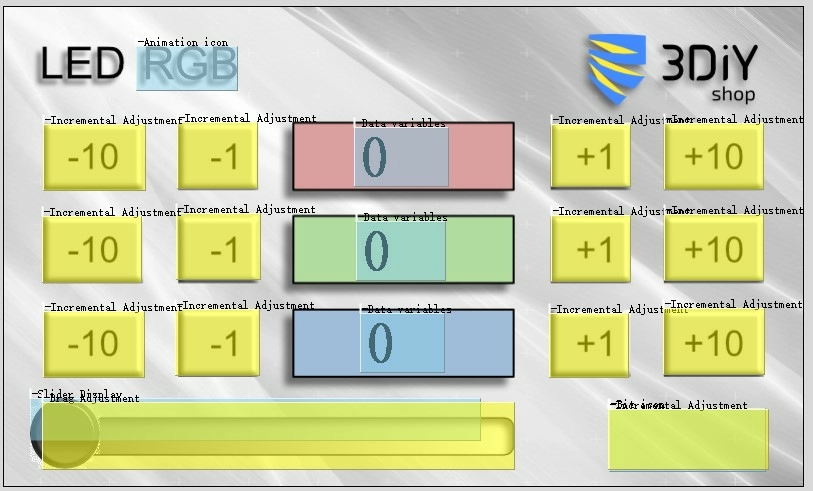
Подвижную ручку ползунка сохраняем в файл “2.png”.
Выключатель имеет два положения, а значит и две картинки, пишем их в файлы “4.png” и “5.png”.
Еще для демонстрации возможностей и просто для красоты добавим анимированную картинку в виде надписи с меняющимися разноцветными буквами. Четыре зацикленных кадра, файлы с “10” по “13.png”:
В дисплее есть интересная возможность имитации нажатия кнопок. Работает это так: создается дополнительный фон, находящийся как бы под основным, при нажатии на активные зоны кнопок, изображение под ними заменяется с основного фона на дополнительный. То есть достаточно нарисовать зоны кнопок в тех же местах, но в другом виде. Мы нарисовали кнопки “выпуклыми” на основном фоне, а на дополнительном сделаем их плоскими, имитируя “нажим”. Кто предпочитает изобразить “нажим” иначе, например, цветом или изменением надписей, пожалуйста, нет преград.
Дополнительный фон сохраняем в файл “1.png”.
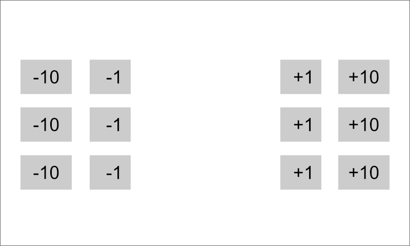
Обратите внимание, что на доп. фоне нет ничего лишнего, только места, видимые при “нажатии”, невидимая информация только зря занимает место в памяти.
Следующим шагом будет подготовка файлов для прошивки в память дисплея. Фон и прочая графика должны упаковываться в фирменные файлы ICL. Один такой файл может вмещать очень много картинок разного вида, главное - следить за размером файла, чтобы он не пересекался с другими блоками памяти. Фон(ы) следует обязательно паковать в файл с названием, начинающимся с цифры “32”, а лучше и вовсе состоящим из этой цифры. Файлы остальных элементов можно называть как-то иначе, в зависимости от блока памяти, в который вы хотите их записать.
Начнем с фона. Открываем “DWIN ICL Generator”, жмем кнопку “Select Pictures”, выбираем оба файла с основным и дополнительным фоном “0.png” и “1.png”.
Настройки лучше не трогать, разве что увеличить качество сжатия до 100%, но и это необязательно. Нажимаем Generate ICL, сохраняем файл с названием “32”, расширение “.icl” добавится само. Файл упадет в папку для прошивки “DWIN_SET”.
Аналогичным образом готовим ICL для анимированных букв, оптом выбрав файлы 10-13 и сохранив их в файл “35.icl”. В данном случае название файла не так критично, нужно лишь следить за перехлестом блоков памяти, но с таким минималистичным проектом нам это не грозит.
Упаковываем единственную картинку с ползунком в файл “33.icl”.
Уминаем два файла выключателя в “46.icl”.
Предварительную работу мы выполнили, теперь нужно все это оформить и оживить, то есть создать исполнительные файлы “.bin”.
Для начала загружаем фоновые файлы в редактор DGUS при помощи плюсика в окне “Location Files”, убеждаемся, что нулевой файл расположен выше первого, иначе меняем их местами.
Теперь на рабочем столе редактора появился наш фон, на который можно положить необходимые для работы элементы отображения и управления. Сперва на разноцветные прямоугольники цветов RGB кладем элементы “Data variables” из информационного слоя “Display Control”, они будут показывать нам на дисплее числа от 0 до 255, соответствующие интенсивности своего цвета.
В свойствах указываем адрес переменных VP для каждого цвета, R - 0x1000, G - 0x1001, B - 0x1002, ячейки идут обязательно подряд, чтобы можно было их считывать и записывать скопом. Остальное делаем одинаково для всех трех: размер шрифта 32, тип переменной int 2 байта, отображать 3 цифры и прочие мелочи.
Кнопки аккуратно обводим элементами “Increment adjustment” из вкладки “Touch Control”. Нажатие на каждую из этих областей увеличит или уменьшит значение переменных того или иного цвета на то или иное значение. Для этого каждую кнопку нужно настроить индивидуально, согласно знака и приращения. Посмотрим на примере одной кнопки, остальные сделаем самостоятельно по аналогии. Возьмем “+1” для красного цвета:
Вот ее свойства с расшифровкой:
Заданы все необходимые действия, привязанные к конкретной переменной. Для облегчения задачи аналогичной настройки остальных кнопок, обведем красной рамкой те параметры, которые будут меняться в зависимости от цвета, величины изменения и знака изменения каждой кнопки.
Переходим к анимации букв “RGB”, элемент совсем не обязательный в данном проекте, но показательный и полезный для будущих разработок. Размещаем информационный элемент “Animation icon” рядом с неподвижной надписью “LED” на фоне, в свойствах указываем имя файла с картинками анимации, в нашем случае “35.icl”. Настраиваем начальную и конечную картинку, время смены, “зацикленность” и прочее.
Чтобы выбрать иконки в ICL файле, нажимаем на зеленый плюсик и ищем нужную иконку в появившемся окне. Понятно, что если выбираем “start” и “stop” иконки, их цифровые названия должны следовать по возрастанию, это надо учитывать на этапе подготовки ICL файла, что мы и сделали.
Если все сделать правильно, когда-нибудь, после заливки прошивки в память, обязательно увидим на дисплее весело перемигивающиеся разными цветами буквы.
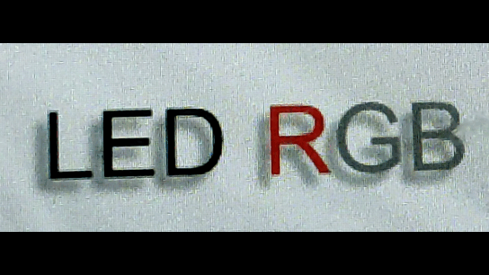
Анимированные изображения никак не зависят от других элементов на экране и процессов, в нем происходящих, движение будет продолжаться, пока активна эта страница, а у нас она единственная, значит, активна всегда.
Следующий элемент - слайдер. Графически он состоит из одной иконки - ползунка, который нужно двигать пальцем влево-вправо (или вверх-вниз, в зависимости от настроек), однако, чтобы было понятно в каких пределах его можно двигать и в какую сторону для достижения того или иного результата, необходимо нарисовать канавку, по которой ползунок якобы ползает. Канавка эта неподвижна и неизменна, значит, нарисуем ее прямо на фоне, что мы уже и сделали ранее.
Для управления слайдером потребуется два элемента - информационный, на котором будет изображаться движение ползунка и сенсорный, который будет следить за положением пальца. К слову, при работе дисплея, ползунок не обязательно тянуть к нужному месту, достаточно тапнуть на это место пальцем и он там моментально окажется.
Итак, сперва выкладываем и растягиваем информационный элемент “Slider Display” примерно на полоску, почему “примерно”, расскажу позже. Следом выкладываем сенсорный “Drag Adjustment”, пока тоже примерно.
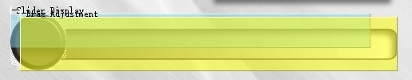
Настраиваем первый элемент. Зададим адрес переменной, следующей за “RGB”, то есть 0x1003, чтобы ее тоже можно было считать и записать одним массивом вместе с остальными. Задаем изображение ползунка, для чего загружаем ICL файл и выбираем в нем иконку ползунка, у нас это “33.icl” и “2” соответственно.
Сенсорный элемент, естественно, привязываем к той же переменной, задаем горизонтальное направление и указываем диапазон значений в крайних положениях, у нас это 0 и 255.
Теперь вернемся к вопросу, почему элементы слайдера изначально кладем “примерно”. Дело в том, что ползунок будет несколько смещен относительно элемента, его изображающего - в зависимости от размера иконки. Более-менее точно сможем расположить его после того, как заданная иконка появится на экране. Как видно по картинке, ползунок “приклеен” к верхнему левому углу “Slider Display”, значит надо подвинуть его так, чтобы центр ползунка по вертикали совпадал с фоновой канавкой, а по горизонтали с левым краем канавки. Справа же ползунок будет выходить за край элемента, пока его левый край не сравняется с правой стенкой “Slider Display”, то есть надо сделать элемент короче канавки на половину ширины ползунка. А вот сенсорный элемент нужно растянуть на всю длину канавки, и сделать его шириной с весь ползунок. Этот лайфхак поможет вам сохранить немного времени и количества циклов перезаписи при совмещении ползунка, фона и пальца.
Наконец, последняя деталь вашем интерфейсе - выключатель. Вариантов сделать фиксированный переключатель несколько, воспользуемся одним из них. Размещаем на месте, где должен быть выключатель, информационный элемент “Bit icon, он позволяет воспроизводить одну из двух иконок в зависимости от состояния соответствующего бита в своей переменной. Переменные у нас двухбайтовые, следовательно при помощи этого инструмента можно создать аж 16 независимых переключателей. К сожалению, нам пока нужен только один, и мы привяжем его к нулевому биту переменной, нажав на кнопку “Setting” в свойствах элемента и выбрав его там.
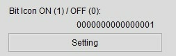
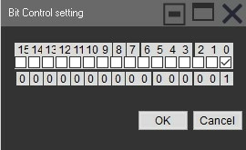
Ниже выбираем иконки для состояния “нуль” (ICON0S) и “единица” (ICON1S) способом описанным выше, через выбор файла ICL и зеленый плюсик. Привязываем элемент к переменной по адресу 0x1004.
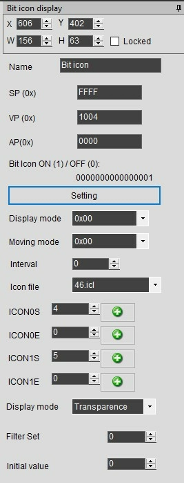
Теперь, если в нулевом бите переменной 0x1004 будет единица, на экране увидим иконку 4, если нуль - иконку 5. Обучим их чередоваться от нажатия пальца.
Накрываем область выключателя сенсорным элементом “Increment adjustment”. Он нам уже знаком по кнопкам цветов, но там с его помощью мы увеличивали или уменьшали переменные на определенное значение, а тут он нужен чтобы менять значение переменной циклически ноль-единица. Это легко делается в настройках.
Привязываемся к переменной 0x1004, точнее к одному ее нулевому биту, вот таким образом.
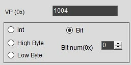
Выбираем метод увеличения “++”, ограничиваем рамками изменений от 0 до 1 с шагом 1, зацикливаем. Начальное значение “0”, увеличиваем на 1, получаем “1”, увеличивая его выпадаем за ограничение и циклически возвращаемся начало то есть “0” и так до бесконечности. Вот вам и фиксированная кнопка.
Закончили с интерфейсом. Вот так будет выглядеть в редакторе наш интерфейс после размещения на нем всех элементов отображения и управления.
Копируем папку “DWIN_SET” в корень SD-карты, записываем интерфейс в дисплей, запускаем, смотрим. Если все сделано правильно, кнопки должны нажиматься, значения цветов меняться, ползунок двигаться, буквы RGB переливаться, выключатель переключаться. Отметим, что пока выключатель никак не влияет на цифры и ползунок, они никак напрямую в дисплее не связаны. Связь мы наладим через Адруино и управление светодиодами тоже.
Прошивка Ардуино
Напоминаю, что мы для своего проекта выбрали Arduino Mega из соображения удобства отладки. Более одного порта UART позволяют видеть приходящие от дисплея команды и прочие служебные сообщения программы. Связь с дисплеем организована через Serial1, связь с монитором отладки через Serial. Можно легко переделать программу под другую Ардуино, с одним аппаратным UART, в комментариях даже написано, где именно.
Сама программа довольно проста и состоит из двух логических частей: принятие команд от дисплея и управление адресной лентой на основе полученной информации. В качестве примера обратной связи, для демонстрации того, что информация может поступать не только от дисплея, но и в дисплей, добавим функцию отключения ленты с обнулением счетчиков и включения с возвратом счетчиков в прежнее положение, сохраненное в Ардуино.
Вкратце алгоритм работы Ардуино такой. Программа следит за входящими данными от дисплея, записывая их в буфер и постоянно проверяя на признаки осознанного пакета информации. Таковыми признаками является байт заголовка пакета “0x5A”. Зная структуру пакета, парсим его, определяя с какого адреса пришла информация и какая именно. Например, если второй байт адреса переменной “0x01”, который в пакете данных находится в пятом байте, речь идет о зеленом цвете, а яркость зеленого цвета, то есть содержимое переменной, лежит в восьмом байте пакета. Сохраняем это значение и отправляем на ленту. Тоже самое делаем с остальными цветами и яркостью.
Если выяснится, что пришла информация о переменной по адресу “0x04”, значит речь идет уже о команде на включение или выключение. Сама команда тоже находится в восьмом байте. Если выключение, гасим ленту, отправляем на дисплей нулевые значения цветов, если включение, зажигаем ленту по сохраненным в памяти параметрами и их же отправляем на дисплей, чтобы все настройки выглядели как до выключения. Значения переменных на дисплей отправляются одним пакетом, так как они все занимают последовательные адреса, начиная с “0x1000”, что очень удобно.
В данном примере мы не проверяем второй байт заголовка и первый байт значения переменной, так как они известны заранее и считается, что не может быть искажений. В реальном устройстве советуем не избегать дополнительной проверки, это резко повышает помехозащищенность и избавляет от возможных ошибок. Если же требуется еще большая стабильность, используйте контрольную сумму пакетов (CRC) и дублирование команд. Мы же пока обойдемся без этого.
Программа:
#include // библиотека для адресной ленты #define LED_PIN 7 // пин сигнала адресной ленты #define LED_COUNT 3 // количество светодиодов Adafruit_NeoPixel strip(LED_COUNT, LED_PIN, NEO_GRB + NEO_KHZ800); #define VECT 2 // пин переключателя RS-282 на прием или отправку, если у вас UART, этого не нужно #define VOUT digitalWrite(VECT, 1); // включение на отправку #define VIN digitalWrite(VECT, 0); // включение на прием byte RGB[5] = {0, 0, 0, 100, 0}; //информация о состоянии светодиодов в формате "RGBIO", красный, зеленый, синий, яркость (0-255), вкл/выкл (0/1) byte OutOn[16] = {0x5A, 0xA5, 0x0D, 0x82, 0x10, 0x00, 0x00, 0x10, 0x00, 0x20, 0x00, 0x30, 0x00, 0x40, 0x00, 0x00}; // заготовка пакета команды на включение, некоторые байты будут заменяться byte OutOff[16] = {0x5A, 0xA5, 0x0D, 0x82, 0x10, 0x00, 0x00, 0x00, 0x00, 0x00, 0x00, 0x00, 0x00, 0x00, 0x00, 0x01}; // пакет команды на выключение void setup() { strip.begin(); // запускаем ленту strip.show(); strip.setBrightness(RGB[3]); // максимальная абсолютная яркость от 0 до 255 (пожалейте питание Ардуино, не выкручивайте на максимум) pinMode(VECT, OUTPUT); Serial.begin(9600); // запускаем порт диагностики Serial.println("start"); Serial1.begin(115200); // запускаем порт дисплея (для Мега, для других “Serial”) AllOn(); // первые значения дисплея после включения: цвета нулевые, яркость на 100 (из 255), см. RGB[] } void loop() { ReadSerial(); // постоянно опрашиваем порт и работаем с принятыми данными } byte ReadSerial() { byte Buffer[20]; // буфер приема сообщений byte Buffer_Len = 0; // число принятых байт bool flag = false; // флаг чтения данных с монитора while (Serial1.available()) { // если пришли данные, записываем их в буфер пока не кончатся Buffer[Buffer_Len] = Serial1.read(); Serial.print(Buffer[Buffer_Len], HEX); Serial.print(" "); Buffer_Len++; flag = true; // если что-то пришло, поднимаем флаг } if (!flag) return 0; // если ничего нет, выходим из функции Serial.print("msg:"); if (Buffer[0] == 0X5A && Buffer[4] == 0X10) { // проверяем на заголовок пакета и первый байт адреса, если все верно, значит пришел пакет с информацией, разбираем его if (Buffer[5] == 0X00) { // команды на смену цветов Serial.print("RED: "); RGB[0] = Buffer[8]; } else if (Buffer[5] == 0X01) { Serial.print("GREEN: "); RGB[1] = Buffer[8]; } else if (Buffer[5] == 0X02) { Serial.print("BLUE: "); RGB[2] = Buffer[8]; } else if (Buffer[5] == 0X03) { // команда на смену яркости Serial.print("INTENSE: "); RGB[3] = Buffer[8]; } else if (Buffer[5] == 0X04) { // команда на включение/выключение Serial.print("ON/OFF: "); RGB[4] = Buffer[8]; RGB[4] == 1 ? AllOff() : AllOn(); } Serial.println(Buffer[8]); } if (!RGB[4]) led(RGB[0], RGB[1], RGB[2]); // если светодиоды включены, высвечиваем на них новый набор цветов return 1; } void led(byte r, byte g, byte b) { // вывод на ленту //byte ii = (280 - RGB[3]) / 25; for (byte i = 0; i < LED_COUNT; i++) { // устанавливаем одинаковые цвета во все пиксели // strip.setPixelColor(i, strip.Color(r / ii, g / ii, b / ii)); strip.setPixelColor(i, strip.Color(r, g, b)); } strip.setBrightness(RGB[3]); // устанавливаем яркость strip.show(); // отправляем на ленту } void AllOff() { // выключить VOUT // переключаем RS-232 на отправку for (byte i = 0; i < 16; i++) { // отправляем пакет с нулевыми цветами и яркостью Serial1.write(OutOff[i]); } VIN // переключаем RS-232 на прием led(0, 0, 0); // гасим ленту } void AllOn() { // включить for (byte i = 0; i < 5; i++) OutOn[2 * i + 7] = RGB[i]; // вставляем в пакет сохраненные данные цветов и яркости, отправляем его VOUT for (byte i = 0; i < 16; i++) { Serial1.write(OutOn[i]); } VIN led(RGB[0], RGB[1], RGB[2]); // зажигаем ленту с установленными параметрами }
В итоге получаем светильник на адресной ленте, управляемый с сенсорного дисплея DWIN.
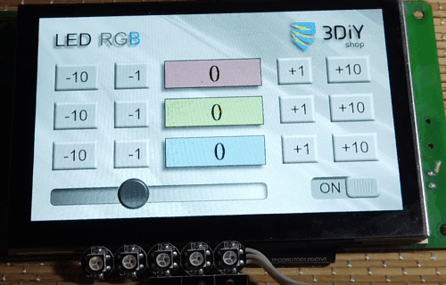
Вывод
Сенсорные дисплеи являются, пожалуй, самым простым и интуитивно понятным для конечного пользователя инструментом HMI. В этой нише дисплеи DWIN занимают неплохие позиции. Огромный ассортимент продукции с разными размерами, характеристиками, свойствами и возможностями позволит подобрать дисплей под любую задачу, от обычного индикатора до большой сенсорной панели с полноценным графическим интерфейсом. Дисплеи DWIN будут надежно работать и дома и в жаркой пустыне и в дождливом лесу и в ледяной тундре, нужно лишь выбрать подходящее техническое исполнение. Область применения ограничена только вашей фантазией. Везде, где требуется сообщить машине что-то более сложное, чем “включи” и “выключи”, а от нее увидеть что-то ещё, кроме подмигивающего светодиода, дисплей станет лучшим решением.
DWIN не является монополистом на рынке, но имеет важное преимущество перед конкурентами - доступную цену при высоком качестве. Процессоры собственной разработки и производства упрощают сборочную схему дисплея, а значит делают его более надежным, предсказуемым и независимым.
Разработка интерфейса не требует навыков программирования, представляя собой несложный графический редактор с активными элементами. Впечатляющий набор инструментов предоставляет огромные возможности для проектирования.
Подключение к контроллеру или компьютеру максимально простое, благодаря популярному интерфейсу UART, а также несложному и логичному протоколу обмена данных.
Советуем присмотреться к дисплеям DWIN не только всем DIY-мастерам, но и разработчикам промышленного оборудования.
FAQ
Начиная с какой сложности проекта имеет смысл использовать сенсорный дисплей?
Граница применения условна и сильно зависит от многих параметров, например бюджета. Разумеется, есть разумные границы, например, устанавливать дисплей ради регулировки одной цифры смысла нет абсолютно никакого. Если же количество настроек приближается к десятку, можно начинать поглядывать в сторону небольших дисплеев. DIY-мастера, использующие сегментные индикаторы или даже алфавитно-цифровые дисплеи 18х02 и подобные, знают как непросто организовать даже небольшое меню, да еще чтобы не забыть, как им пользоваться через полгода. С сенсорным дисплеем таких проблем уже не будет.
Поддерживают ли дисплеи DWIN видео?
Ограниченный размер памяти стандартных дисплеев не позволяет использовать видеофайлы, для этого есть варианты на Linux и Android, но это уже практически полноценные планшеты. Кроме того, есть разновидность дисплеев с собственными видеокамерами, позволяющие вести трансляцию на экран в реальном времени, при этом продолжая работать по основной специальности, то есть реагируя на нажатия и выводя информацию.
Можно ли увеличить размер памяти дисплея?
Можно купить дисплей с большим размером памяти. Сейчас они могут иметь от 1 Гб до 16 Гб, но даже самый скромный объем достаточен для довольно больших и сложных интерфейсов. Следует помнить, что дисплей не телевизор и не игровая приставка, его задачи взаимодействовать с человеком в максимально понятном виде, с чем он отлично справляется.
Для чего на дисплее “пищалка” и динамик?
Динамиками и выходами на динамик оснащаются далеко не все модели, а вот зуммер, он же “пищалка” есть у всех. Обычно он используется для подтверждения нажатия кнопок, особенно тех, прикосновение к которым никак не отображаются на экране. Может использоваться для звукового оповещения о каком-либо важном событии, к примеру, о перегреве или падении уровня воды ниже минимума. Динамик нужен для того же, только делает это голосом и разнообразными звуками. Кроме того, можно снабдить дисплей вербальными подсказками и вопросами, например, для игр и квестов.
Что такое дисплеи с COF структурой?
Это новая технология изготовления дисплея, при которой процессор размещается на миниатюрной гибкой печатной плате рядом с дисплеем, соединяясь с ним через шлейф. Таким образом удается создавать сенсорные дисплеи толщиной от 2 до 4 мм, что для рынка является уникальным явлением. Подобные дисплеи можно попросту наклеивать на любые поверхности как “живые” этикетки.
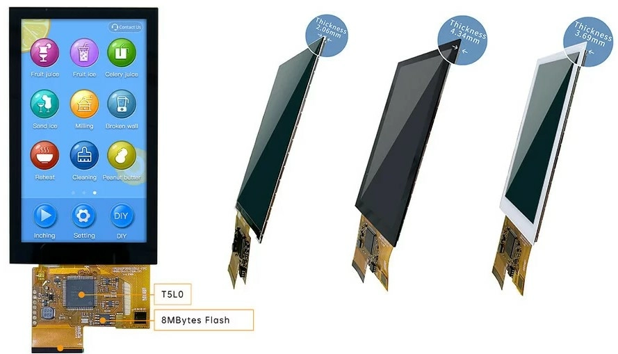
В редакторе DGUS встречаются непонятные элементы отображения и управления, некоторые из них даже не переведены с китайского, как с ними быть?
Да, к сожалению, поддержка несколько отстает, редактор переведен процентов на 90, а документации и того меньше. Например, как тебе такое?
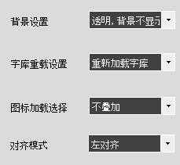
Даже форум для вопросов-ответов на английском пока еще почти пустой, не говоря уже про русский. Часть информации выложена на сайте, часть освоена энтузиастами, а что-то еще не исследовано и ждет своего Колумба. Пожалуй, это самый большой недостаток DWIN на сегодняшний день. Однако нет сомнений, что ситуация будет довольно быстро исправляться, а с ростом популярности продукции вырастет и объем наработок. Впрочем, создавать красивые и удобные интерфейсы можно уже на базе того, что есть, да и программы-переводчики никто не отменял.
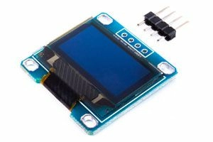
Дисплеи
Дисплей OLED 128×64
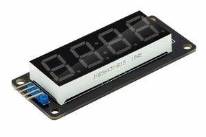
Дисплеи
Светодиодный LED дисплей на базе драйвера TM1637
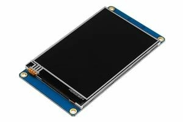
Дисплеи
Nextion дисплей
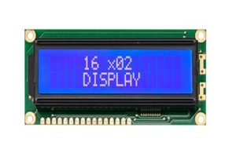
Дисплеи
Символьный дисплей LCD 1602 (1604)
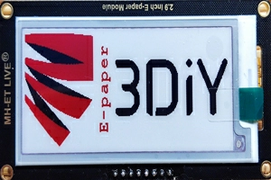
Дисплеи
Дисплей E-paper. Электронная бумага
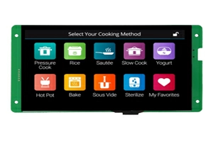
Дисплеи
Сенсорные HMI дисплеи DWIN
Добавить комментарий
Назад к списку